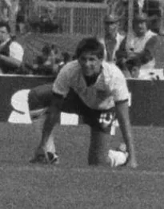

The profile
Gary Lineker
Gary Lineker was born in Leicester and joined his hometown club as a young player. His path to England’s national team began in domestic football rather than at a major overseas side.
He scored heavily for Leicester City, Everton, Barcelona and Tottenham Hotspur. He rarely needed elaborate dribbling: he read the next pass early, moved across a defender and finished from close range. His efficient penalty-area play made him England's main scorer for years.
Lineker scored six goals at the 1986 World Cup, more than anyone else in the tournament. His hat-trick against Poland helped rescue England's group campaign, and he kept scoring as the team reached the quarter-finals. England lost to Argentina, but Lineker's finishing gave the side a path through the competition and won him the top-scorer honour.
1986Mexico
Quarter-finals
Group F Portugal1 : 0England
- CARLOS MANUEL75′
Portugalhome
Starting lineup
- BENTO
- ALVARO
- FREDERICO
- OLIVEIRA
- INACIO
- ANTONIO SOUSA
- CARLOS MANUEL
- PACHECO
- ANDRE
- GOMES
- DIAMANTINO
Substitutions
- 73′FUTRE on · GOMES off
- 82′JOSE ANTONIO on · DIAMANTINO off
Englandaway
Starting lineup
- Peter SHILTON
- Gary STEVENS
- Kenny SANSOM
- Terry BUTCHER
- Terry FENWICK
- Glenn HODDLE
- Bryan ROBSON
- Ray WILKINS
- Chris WADDLE
- Mark HATELEY
- Gary LINEKER
Substitutions
- 80′Steve HODGE on · Chris WADDLE off
- 80′Peter BEARDSLEY on · Bryan ROBSON off
Group F Morocco0 : 0England
Moroccohome
Starting lineup
- Badou ZAKI
- Labid KHALIFA
- Abdelmajid LAMRISS
- Mustafa EL BIYAZ
- Noureddine BOUYAHYAOUI
- Abdelmajid DOLMY
- Aziz BOUDERBALA
- Mohamed TIMOUMI
- Abdelrazzak KHAIRI
- Abdelkarim KRIMAU
- Mustafa MERRY
Substitutions
- 73′Lahcen OUDANI on · Abdelmajid LAMRISS off
- 87′Abdel Aziz SOULAYMANI on · Mustafa MERRY off
Englandaway
Starting lineup
- Peter SHILTON
- Gary STEVENS
- Kenny SANSOM
- Terry BUTCHER
- Terry FENWICK
- Glenn HODDLE
- Bryan ROBSON
- Ray WILKINS
- Chris WADDLE
- Mark HATELEY
- Gary LINEKER
Substitutions
- 41′Steve HODGE on · Bryan ROBSON off
- 76′Gary A. STEVENS on · Mark HATELEY off
Group F England3 : 0Poland
- Gary LINEKER9′
- Gary LINEKER14′
- Gary LINEKER34′
Englandhome
Starting lineup
- Peter SHILTON
- Gary STEVENS
- Kenny SANSOM
- Terry BUTCHER
- Terry FENWICK
- Glenn HODDLE
- Peter REID
- Trevor STEVEN
- Steve HODGE
- Gary LINEKER
- Peter BEARDSLEY
Substitutions
- 75′Chris WADDLE on · Peter BEARDSLEY off
- 86′Kerry DIXON on · Gary LINEKER off
Polandaway
Starting lineup
- Jozef MLYNARCZYK
- Marek OSTROWSKI
- Roman WOJCICKI
- Stefan MAJEWSKI
- Krzysztof PAWLAK
- Waldemar MATYSIK
- Ryszard KOMORNICKI
- Dariusz DZIEKANOWSKI
- Jan URBAN
- Wlodimierz SMOLAREK
- Zbigniew BONIEK
Substitutions
- 22′Jan KARAS on · Ryszard KOMORNICKI off
- 45+1′Andrzej BUNCOL on · Waldemar MATYSIK off
Round of 16 England3 : 0Paraguay
- Gary LINEKER31′
- Peter BEARDSLEY56′
- Gary LINEKER72′
Englandhome
Starting lineup
- Peter SHILTON
- Gary STEVENS
- Kenny SANSOM
- Alvin MARTIN
- Terry BUTCHER
- Glenn HODDLE
- Peter REID
- Trevor STEVEN
- Steve HODGE
- Gary LINEKER
- Peter BEARDSLEY
Substitutions
- 58′Gary A. STEVENS on · Peter REID off
- 80′Mark HATELEY on · Peter BEARDSLEY off
Paraguayaway
Starting lineup
- Roberto FERNANDEZ
- Juan TORALES
- Cesar ZABALA
- Vladimiro SCHETTINA
- Rogelio DELGADO
- Jorge NUNEZ
- Buenaventura FERREIRA
- Julio Cesar ROMERO
- Adolfino CANETE
- Roberto CABANAS
- Alfredo MENDOZA
Substitutions
- 64′Jorge GUASCH on · Juan TORALES off
Quarterfinal Argentina2 : 1England
- Diego MARADONA51′
- Diego MARADONA55′
- Gary LINEKER81′
Argentinahome
Starting lineup
- Nery PUMPIDO
- Jose BROWN
- Jose CUCIUFFO
- Julio OLARTICOECHEA
- Oscar RUGGERI
- Sergio BATISTA
- Jorge BURRUCHAGA
- Diego MARADONA
- Hector ENRIQUE
- Ricardo GIUSTI
- Jorge VALDANO
Substitutions
- 75′Carlos TAPIA on · Jorge BURRUCHAGA off
Englandaway
Starting lineup
- Peter SHILTON
- Gary STEVENS
- Kenny SANSOM
- Terry BUTCHER
- Terry FENWICK
- Glenn HODDLE
- Peter REID
- Trevor STEVEN
- Steve HODGE
- Gary LINEKER
- Peter BEARDSLEY
Substitutions
- 69′Chris WADDLE on · Peter REID off
- 74′John BARNES on · Trevor STEVEN off
1990Italy
Fourth place
Group F England1 : 1Republic of Ireland
- Gary LINEKER9′
- Kevin SHEEDY73′
Englandhome
Starting lineup
- Peter SHILTON
- Gary STEVENS
- Stuart PEARCE
- Des WALKER
- Terry BUTCHER
- Bryan ROBSON
- Chris WADDLE
- John BARNES
- Paul GASCOIGNE
- Peter BEARDSLEY
- Gary LINEKER
Substitutions
- 69′Steve McMAHON on · Peter BEARDSLEY off
- 83′Steve BULL on · Gary LINEKER off
Republic of Irelandaway
Starting lineup
- Pat BONNER
- Chris MORRIS
- Steve STAUNTON
- Mick McCARTHY
- Kevin MORAN
- Paul McGRATH
- Ray HOUGHTON
- Kevin SHEEDY
- Andy TOWNSEND
- John ALDRIDGE
- Tony CASCARINO
Substitutions
- 64′Alan McLOUGHLIN on · John ALDRIDGE off
Group F England0 : 0Netherlands
Englandhome
Starting lineup
- Peter SHILTON
- Stuart PEARCE
- Des WALKER
- Terry BUTCHER
- Paul PARKER
- Mark WRIGHT
- Bryan ROBSON
- Chris WADDLE
- John BARNES
- Paul GASCOIGNE
- Gary LINEKER
Substitutions
- 59′Steve BULL on · Chris WADDLE off
- 64′David PLATT on · Bryan ROBSON off
Netherlandsaway
Starting lineup
- Hans VAN BREUKELEN
- Berry VAN AERLE
- Ronald KOEMAN
- Adri VAN TIGGELEN
- Frank RIJKAARD
- Jan WOUTERS
- Ruud GULLIT
- Richard WITSCHGE
- Johnny VAN T SCHIP
- Marco VAN BASTEN
- Hans GILLHAUS
Substitutions
- 74′Wim KIEFT on · Johnny VAN T SCHIP off
Group F England1 : 0Egypt
- Mark WRIGHT58′
Englandhome
Starting lineup
- Peter SHILTON
- Stuart PEARCE
- Des WALKER
- Paul PARKER
- Mark WRIGHT
- Chris WADDLE
- John BARNES
- Steve McMAHON
- Paul GASCOIGNE
- Gary LINEKER
- Steve BULL
Substitutions
- 84′Peter BEARDSLEY on · Steve BULL off
- 87′David PLATT on · Chris WADDLE off
Egyptaway
Starting lineup
- Ahmed SHOBEIR
- Ibrahim HASSAN
- Rabie YASSIN
- Hany RAMZY
- Hesham YAKAN
- Ismail YOUSSEF
- Magdy ABDELGHANY
- Gamal ABDELHAMID
- Hossam HASSAN
- Ahmed RAMZY
- Ahmed EL KASS
Substitutions
- 77′Adel ABDELRAHMAN on · Ahmed EL KASS off
- 77′Tarek SOLIMAN on · Gamal ABDELHAMID off
Round of 16 England1 : 0Belgium
- David PLATT119′
Englandhome
Starting lineup
- Peter SHILTON
- Stuart PEARCE
- Des WALKER
- Terry BUTCHER
- Paul PARKER
- Mark WRIGHT
- Chris WADDLE
- John BARNES
- Steve McMAHON
- Paul GASCOIGNE
- Gary LINEKER
Substitutions
- 71′David PLATT on · Steve McMAHON off
- 74′Steve BULL on · John BARNES off
Belgiumaway
Starting lineup
- Michel PREUDHOMME
- Eric GERETS
- Leo CLIJSTERS
- Stephane DEMOL
- Georges GRUN
- Michel DE WOLF
- Bruno VERSAVEL
- Franky VAN DER ELST
- Enzo SCIFO
- Marc DEGRYSE
- Jan CEULEMANS
Substitutions
- 64′Nico CLAESEN on · Marc DEGRYSE off
- 107′Patrick VERVOORT on · Bruno VERSAVEL off
Quarterfinal England3 : 2Cameroon
- David PLATT25′
- Gary LINEKER83′ · pen.
- Gary LINEKER105′ · pen.
- Emmanuel KUNDE61′ · pen.
- Eugene EKEKE65′
Englandhome
Starting lineup
- Peter SHILTON
- Stuart PEARCE
- Des WALKER
- Terry BUTCHER
- Paul PARKER
- Mark WRIGHT
- Chris WADDLE
- John BARNES
- David PLATT
- Paul GASCOIGNE
- Gary LINEKER
Substitutions
- 45+1′Peter BEARDSLEY on · John BARNES off
- 74′Trevor STEVEN on · Terry BUTCHER off
Cameroonaway
Starting lineup
- Thomas NKONO
- Benjamin MASSING
- Bertin EBWELLE
- Emmanuel KUNDE
- Stephen TATAW
- Louis MFEDE
- Jean Claude PAGAL
- Thomas LIBIIH
- Emmanuel MABOANG
- Francois OMAM-BIYIK
- Cyrille MAKANAKY
Substitutions
- 62′Eugene EKEKE on · Louis MFEDE off
Semifinal West Germany1 : 1England
- Andreas BREHME60′
- Gary LINEKER80′
West Germanyhome
Starting lineup
- Bodo ILLGNER
- Andreas BREHME
- Juergen KOHLER
- Klaus AUGENTHALER
- Guido BUCHWALD
- Thomas BERTHOLD
- Thomas HAESSLER
- Lothar MATTHAEUS
- Olaf THON
- Rudi VOELLER
- Juergen KLINSMANN
Substitutions
- 38′Karlheinz RIEDLE on · Rudi VOELLER off
- 67′Stefan REUTER on · Thomas HAESSLER off
Englandaway
Starting lineup
- Peter SHILTON
- Stuart PEARCE
- Des WALKER
- Terry BUTCHER
- Paul PARKER
- Mark WRIGHT
- Chris WADDLE
- David PLATT
- Paul GASCOIGNE
- Peter BEARDSLEY
- Gary LINEKER
Substitutions
- 70′Trevor STEVEN on · Terry BUTCHER off
Third-place match Italy2 : 1England
- Roberto BAGGIO71′
- Salvatore SCHILLACI86′ · pen.
- David PLATT81′
Italyhome
Starting lineup
- Walter ZENGA
- Franco BARESI
- Giuseppe BERGOMI
- Luigi DE AGOSTINI
- Ciro FERRARA
- Paolo MALDINI
- Pietro VIERCHOWOD
- Carlo ANCELOTTI
- Giuseppe GIANNINI
- Roberto BAGGIO
- Salvatore SCHILLACI
Substitutions
- 67′Nicola BERTI on · Luigi DE AGOSTINI off
- 90′Riccardo FERRI on · Giuseppe GIANNINI off
Englandaway
Starting lineup
- Peter SHILTON
- Gary STEVENS
- Des WALKER
- Paul PARKER
- Mark WRIGHT
- Tony DORIGO
- Steve McMAHON
- David PLATT
- Trevor STEVEN
- Peter BEARDSLEY
- Gary LINEKER
Substitutions
- 72′Chris WADDLE on · Steve McMAHON off
- 72′Neil WEBB on · Mark WRIGHT off